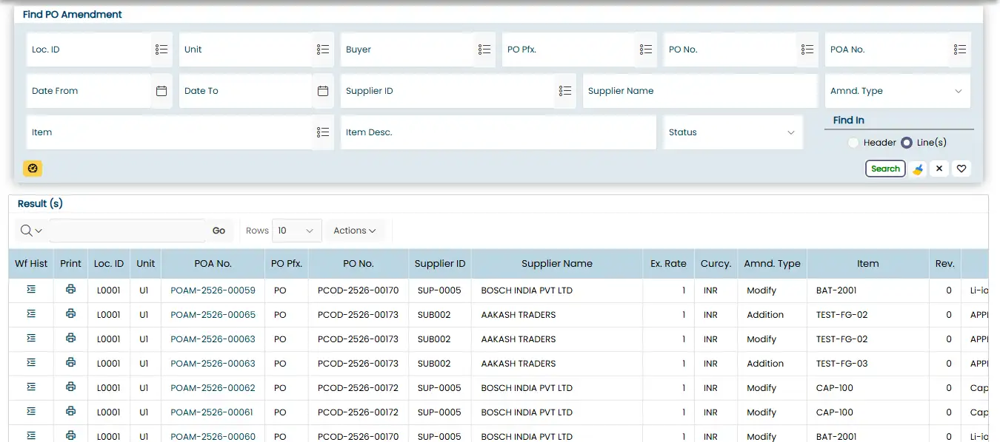
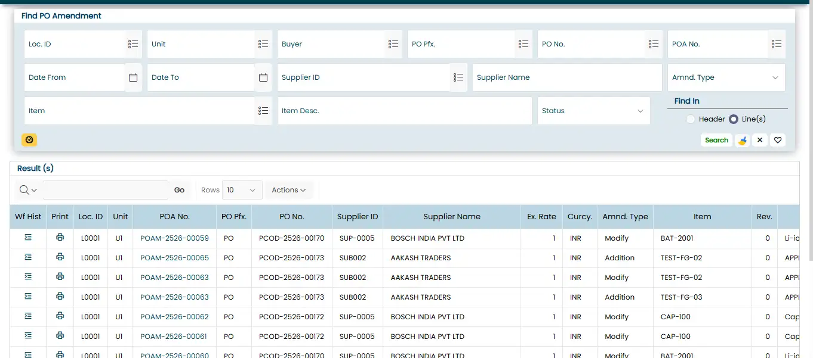

<div data-category="Operating Instructions" data-title="How to Query data" data-updated="December 01, 2025" data-contributors="RoadmapIT" data-breadcrumb="Home,Operating Instructions,How to Query data">
  <div class="page-content">
    <!-- Query Data -->
    <p>Following are the steps to query an existing data.</p>
    <h2>Step 1</h2>
    <ul style="list-style-type: none; align-content: center">
      <li class="mouse-icon">Go to the Find screen.</li>
      <li class="mouse-icon">Click on the Search button.</li>
      <li class="mouse-icon">
        Enter the relevant value in the required field and click
        <i class="bi bi-check-lg fs-4 mx-1 text-success"></i>
        to retrieve the matching data.
      </li>
    </ul>
    
    <ul style="list-style-type: none; align-content: center">
      <li class="mouse-icon">The screen will be populated with records matching the search criteria.</li>
    </ul>
    
  </div>
</div>